Traditionsreicher Kulturraum im
Spannungsfeld aktueller Geopolitik –
NORDAFRIKA &
DER NAHE UND
MITTLERE OSTEN
Portfolio von
Maxi P.
Fach Geographie · 10. Klasse · Gymnasium | Abgabe: 16.06.2026
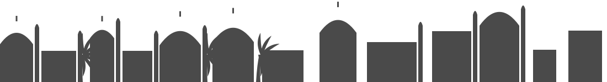
Auf dieser Expedition wirst du …
… eine der spannendsten und zugleich konfliktreichsten Regionen der Erde entdecken. Schnall dich an!
- dein eigenes Bild über eine spannende und konfliktgeprägte Region besser kennenlernen
- Wesentliches über die Topographie Nordafrikas und des Nahen und Mittleren Ostens erkunden
- natur- und kulturräumliche Merkmale der Region entdecken
- den Begriff „Orient“ kritisch betrachten
- moderne Entwicklungen in der Region untersuchen
- die typische orientalische Stadt analysieren
- die Ressourcen Erdöl und Wasser als Konflikt- und Entwicklungsursachen entdecken
- Auswirkungen von Großereignissen wie der FIFA WM 2022 in Katar aus mehreren Blickwinkeln betrachten
- das Leben in der Wüste mit seinen Risiken erkunden
Meine Erwartung an die Reise: Ich kenne die Region bisher vor allem aus den Nachrichten – also meist im
Zusammenhang mit Krieg, Öl oder Wüste. Ich bin gespannt, ein differenzierteres Bild zu bekommen und hinter
die Klischees zu schauen.
Aufgabenübersicht
| 1 | Kulturwissenschaftler/-in · Stereotype & „Orient“ |
| 2 | Kartenkenner/-in · Topographie der Region |
| 3 | Marketing-Stratege/-in · Tourismus-Flyer |
| 4 | Stadtgeograph/-in · die orientalische Stadt |
| 5 | Diplomat/-in · Konflikte als Schaubild |
| 6 | Humanitäre/-r Helfer/-in · Desertifikation |
| 7 | Influencer/-in · die Golfstaaten & Dubai |
| 8 | Investigativjournalist/-in · Migration & WM |
| ★ | Selbstreflexion |
Die Inhalte des Portfolios werden im Rahmen einer Kurzarbeit abgeprüft.
Bewertung – das achte ich beim Arbeiten
- alle Aufgaben vollständig & eigenständig bearbeitet
- alle Aufgaben inhaltlich korrekt & nachvollziehbar
- die Dokumentation zeigt den eigenständigen Arbeitsprozess
- die Arbeitszeit in der Schule effektiv genutzt
- die äußere Form ist ansprechend
- sprachliche Ausgestaltung (Fachbegriffe, Rechtschreibung …)
- Kreativität
Mein Plan: Pro Quest erst recherchieren, dann
eine eigene Grafik gestalten und am Ende sprachlich überarbeiten. Fachbegriffe markiere ich
blau.
Quest 1
Kulturwissenschaftler /-in
Originalaufgabe
Wir wollen als Gesellschaft lernen, nicht in klassischen Rollenbildern und Stereotypen zu denken …
a) Entwickle eine Collage an Bildern, die für dich den „Orient“ bzw. die Region am besten darstellen.
b) Reflektiere: welche Bilder sind stereotypisch, welche tatsächlich passend?
c) Lies die Definition von Ewald Banse (1909) und nimm kritisch Stellung.
d) Entwirf eine eigene Definition des Begriffs „Orient“.
a) Meine Bilder-Collage „Orient“
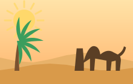
KlischeeWüste & Kamele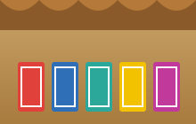
Klischeeorientalischer BasarKlischee„1001 Nacht“
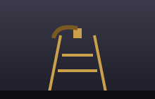
teilsErdöl-Reichtum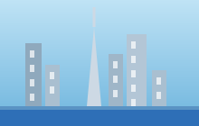
realMegacities (Dubai)realBildung & Forschung
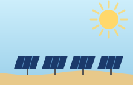
realSolarenergie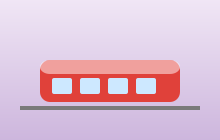
realmoderne Metrorealvielfältige Küche
b) Reflexion: Klischee oder Realität?
Eher stereotyp (rot)
Wüste, Kamele, Basar und „1001 Nacht“ sind romantisierende Klischees. Sie zeigen die Region als exotisch,
altmodisch und „aus der Zeit gefallen“. Natürlich gibt es Wüsten – aber über 60 % der Menschen leben
heute in Städten, viele in hochmodernen Metropolen.
Eher passend (grün)
Skyline, Forschung, Solarparks, Metro und Esskultur treffen die heutige Realität viel besser. Der Erdöl-Reichtum
ist real, gilt aber nur für einige Golfstaaten – Länder wie der Jemen oder Sudan
sind dagegen bitterarm. Die Region ist also sehr vielfältig.
Quest 1– Begriff „Orient“
c) Kritische Stellungnahme zu Ewald Banse (1909)
„Der Orient ist das Land der Sonne, der Sehnsucht und der Träume,
das ewig gleiche Morgenland der Wüsten, Oasen und Karawanen, sinnlich, geheimnisvoll und unberührt vom Fortschritt des
Abendlandes.“ — sinngemäß nach Ewald Banse, Die Länder und Völker der Türkei (1909), M2
Banses Definition ist aus heutiger Sicht stark kritikwürdig. Er beschreibt den „Orient“ nicht sachlich, sondern
romantisierend und klischeehaft („Sehnsucht“, „Träume“, „Karawanen“). Vor allem stellt er das
„Morgenland“ als ewig gleich und „unberührt vom Fortschritt“ dar – also als rückständig –, während das
europäische „Abendland“ angeblich für Vernunft und Fortschritt steht. Das ist ein typisch eurozentrischer
und kolonialer Blick: Eine riesige Region mit Dutzenden Völkern, Sprachen und Religionen wird auf ein
einziges, exotisches Bild reduziert. Der Literaturwissenschaftler Edward Said nannte diese Denkweise später
„Orientalismus“ – der „Orient“ als ein vom Westen erfundenes Gegenbild. Außerdem ist der Begriff
relativ: „Morgenland“ (= wo die Sonne aufgeht) ist nur von Europa aus betrachtet sinnvoll.
d) Meine eigene Definition
„Orient“ (eigene Definition): Mit „Orient“ wird traditionell der Kulturraum von Nordafrika über den Nahen bis zum
Mittleren Osten bezeichnet – grob von Marokko bis nach Iran/Afghanistan. Verbindende Merkmale sind häufig die
arabische bzw. persische/türkische Sprache, der Islam als prägende Religion (neben jüdischen und christlichen
Minderheiten) sowie ein trocken-heißes Klima. Wichtig ist mir: „Orient“ ist kein einheitlicher, rückständiger
Block, sondern ein vielfältiger, sich schnell wandelnder Raum – von bitterarmen Krisenländern bis zu den reichsten
Metropolen der Welt. Weil der Begriff klischeebehaftet ist, spricht man heute oft neutraler von der
MENA-Region (Middle East & North Africa).
3
Weltreligionen entstanden hier
Quest 2
Kartenkenner /-in
Originalaufgabe
a) Benenne die blau markierten Länder. b) Markiere Dubai grün,
Katar gelb und Gaza rot.
c) Ziehe Grenzen: wo Maghreb, wo Naher, wo Mittlerer Osten? (Buch S. 51 / M3)
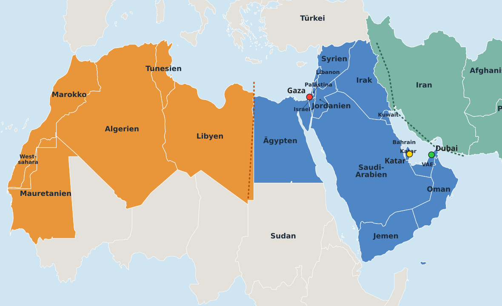
Eigene Karte: Länder beschriftet, drei Großregionen farbig, drei Städte als Farbpunkte markiert.
Maghreb (6)
Marokko · Algerien · Tunesien · Libyen · Mauretanien · Westsahara
Naher Osten (14)
Ägypten · Israel · Palästina · Libanon · Syrien · Jordanien · Irak · Saudi-Arabien · Kuwait · Bahrain · Katar · VAE · Oman · Jemen
Mittlerer Osten (3)
Iran · Afghanistan · Pakistan
c) Grenzziehung: Der Maghreb („Westen“ auf Arabisch) umfasst den Nordwesten Afrikas.
Östlich davon beginnt der Nahe Osten mit Ägypten, der Levante (Israel, Libanon, Syrien …) und der Arabischen Halbinsel.
Der Mittlere Osten schließt im Osten an (Iran, Afghanistan, Pakistan). Die Grenzen sind keine festen Linien,
sondern je nach Quelle etwas unterschiedlich (gestrichelt eingezeichnet).
Quest 3
Marketing-Stratege /-in
Originalaufgabe Such dir eines der 23 Länder aus. Gestalte einen Touri-Flyer mit allgemeinen
Informationen, kulturellen Besonderheiten, Sehenswürdigkeiten und Aktivitäten – kreativ und mit interessanten Fakten!
MAROKKO
المغرب · Entdecke das Tor zu Afrika!
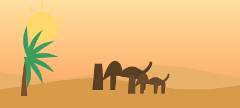
● Auf einen Blick
| Hauptstadt | Rabat |
| Größte Stadt | Casablanca |
| Einwohner | ca. 37 Mio. |
| Sprachen | Arabisch & Berberisch (Tamazight) |
| Währung | Dirham (MAD) |
| Landschaft | Atlasgebirge, Sahara, Atlantik & Mittelmeer |
● Kultur
Bunte Mischung aus arabischen, berberischen & europäischen Einflüssen.
Berühmt für Minztee, Gewürze, Teppiche und die Gastfreundschaft. In den Medinas (Altstädten) verliert man
sich in engen Gassen voller Handwerk.
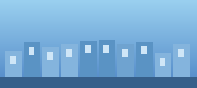
Chefchaouen – die „blaue Stadt“
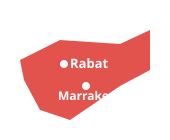
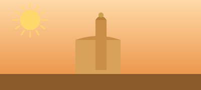
Koutoubia-Moschee, Marrakesch
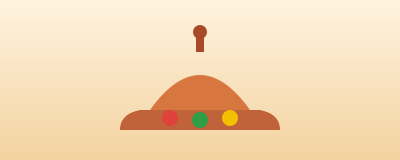
Tajine – Nationalgericht
● Aktivitäten
- Kameltour in der Sahara (Merzouga)
- Souks & Gerbereien in Fès
- Trekking im Hohen Atlas
- Surfen an der Atlantikküste
★ Wusstest du?
In Fès steht mit der Universität al-Qarawīyīn (gegr. 859) die laut UNESCO
älteste durchgehend betriebene Universität der Welt – gegründet von einer Frau, Fatima al-Fihri!
Quest 4
Stadtgeograph /-in
Originalaufgabe a) Informiere dich über die orientalische Stadt (Buch S.58–60).
b) Erklärevideo ansehen & eigene Skizze erstellen. c) Vergleiche mit dem Modell der europäischen Stadt.
d) Vergleiche auf Google Earth ein Luftbild mit deiner Skizze (Screenshots).
b) Meine Skizze: Modell der orientalischen Stadt
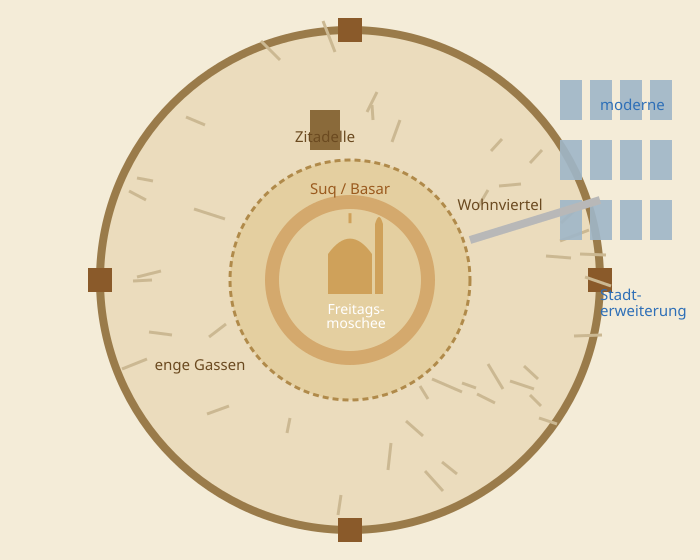
a) Typische Merkmale
- Medina: ummauerte Altstadt mit Stadttoren
- Freitagsmoschee im Zentrum als Mittelpunkt
- Suq/Basar ringförmig um die Moschee; edle Waren innen, „lautes“ Handwerk (Gerber) außen
- Zitadelle/Kasbah als Herrschaftssitz
- Sackgassen & enge, verwinkelte Gassen, kaum Plätze
- Wohnviertel nach Religion/Herkunft getrennt; Häuser nach innen orientiert (Innenhof)
- außerhalb: moderne, geplante Stadterweiterung im Schachbrettraster (oft Kolonialzeit)
Anders als bei uns gibt es kein klares Geschäftszentrum (CBD) im Sinne
europäischer Städte – das wirtschaftliche Herz ist der Basar.
c) Vergleich: orientalische ↔ europäische Stadt
| Merkmal | Orientalische Stadt | Europäische Stadt (Ringe/Sektoren) |
|---|
| Zentrum | Freitagsmoschee + Basar (religiös/kulturell) | CBD / Marktplatz + Kirche (wirtschaftlich) |
| Grundriss | verwinkelt, Sackgassen, Mauer | geplant, ringförmig, Ausfallstraßen |
| Gliederung | nach Religion/Ethnie & Handwerk | nach sozialer Schicht & Funktion (Wohnen/Arbeit) |
| Häuser | nach innen (Innenhof), private Welt | nach außen (Fenster zur Straße) |
| Gemeinsam | historischer Kern, Wachstum in Ringen nach außen, moderne Erweiterung am Rand, soziale Trennung der Viertel |
d) Luftbild-Vergleich (Google Earth)
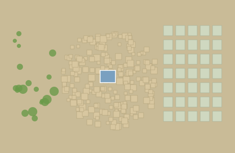
Im „Luftbild“ von Marrakesch / Fès erkenne ich die Strukturen meiner Skizze wieder:
links das dichte Gewirr winziger Häuserblöcke der Medina (kaum gerade Straßen), in der Mitte der große
Moschee-Hof, rechts die moderne Rasterstadt (Ville Nouvelle) mit breiten, geraden Straßen. Genau dieser
Gegensatz verwinkelt ↔ Schachbrett bestätigt das Modell.
Quest 5
Diplomat /-in
Originalaufgabe a) Nutze die KI (QR-Code). b) Entwickle einen ausführlichen,
neutralen Prompt, der die Konflikte im Nahen/Mittleren Osten leicht verständlich erklärt. c) Erstelle ein
Schaubild: wer ist mit wem verbündet, wer kämpft gegen wen, wie entstanden die Konflikte?
b) Mein Prompt für die KI
„Du bist ein neutraler Geographielehrer. Erkläre mir die wichtigsten aktuellen Konflikte im Nahen und
Mittleren Osten so, dass ein Schüler der 10. Klasse sie versteht. Wichtig:
(1) Bevorzuge keine Konfliktpartei und werte nicht.
(2) Nenne zu jedem Konflikt: beteiligte Parteien, kurze Vorgeschichte, Streitpunkt.
(3) Erkläre die Bündnisse (wer unterstützt wen) und die Gegnerschaften.
(4) Nutze einfache Sprache, max. 1 Satz Vorgeschichte pro Konflikt.
(5) Gib am Ende eine Tabelle Partei – Verbündete – Gegner aus.
Vermeide Schuldzuweisungen und schreibe sachlich.“
↳ Tricks: klare Rolle, klares Ziel, Format vorgeben, Neutralität mehrfach betonen, Zielgruppe nennen.
c) Schaubild: Bündnisse & Konflikte
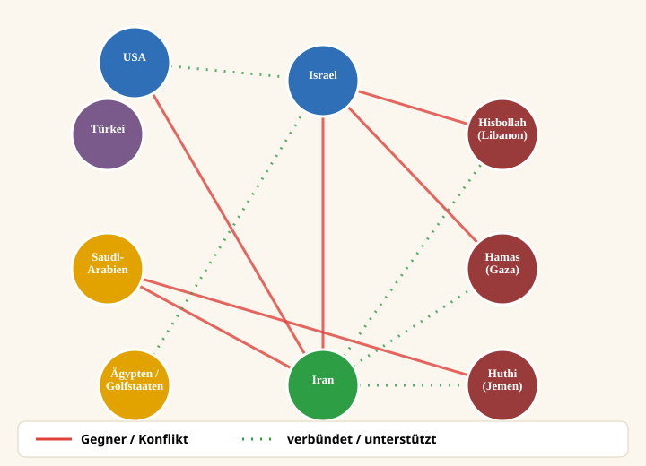
Kurz erklärt (neutral): Im Zentrum steht der Gegensatz zwischen Israel (von den USA unterstützt) und
Iran, das verschiedene bewaffnete Gruppen unterstützt (Hamas in Gaza, Hisbollah im Libanon, Huthi im Jemen –
oft „Achse des Widerstands“ genannt). Zugleich konkurrieren Saudi-Arabien und Iran um Einfluss in der
Region (u. a. im Jemen-Krieg). Viele Konflikte haben historische Wurzeln (Staatsgründung Israels 1948,
Grenzziehungen der Kolonialmächte, religiöse & politische Gegensätze).
Quest 6
Humanitäre/-r Helfer /-in
Originalaufgabe a) Informiere dich über die Desertifikation der Sahelzone (S.76/77).
b) Erläutere Lage, Klima, Naturraum. c) Begründe, warum die Sahelzone ein fragiles Ökosystem ist
(Bodendegradation, Desertifikation, Sahel-Syndrom). d) Erstelle ein Wirkungsgefüge. e) Hungersnot im Sudan.
b) Lage · Klima · Naturraum
- Lage: breiter Übergangsstreifen südlich der Sahara, vom Atlantik bis zum Roten Meer (u. a. Mali, Niger, Tschad, Sudan).
- Klima: heiß & semiarid; nur eine kurze Regenzeit, sehr unzuverlässige Niederschläge (oft Dürren).
- Naturraum: Dorn- & Trockensavanne, dünne Vegetation, nährstoffarme Böden – Lebensgrundlage v. a. Wanderfeldbau & Viehzucht.
c) Warum so fragil? – Begriffe
- Bodendegradation: Verschlechterung des Bodens (Erosion, Nährstoff-/Humusverlust) – er wird unfruchtbar.
- Desertifikation: fortschreitende Wüstenbildung in Trockengebieten durch Natur und Mensch.
- Sahel-Syndrom: Teufelskreis aus Übernutzung (Übersweidung, Abholzung) durch wachsende Bevölkerung + Armut, der die Desertifikation verstärkt.
d) Wirkungsgefüge „Desertifikation in der Sahelzone“
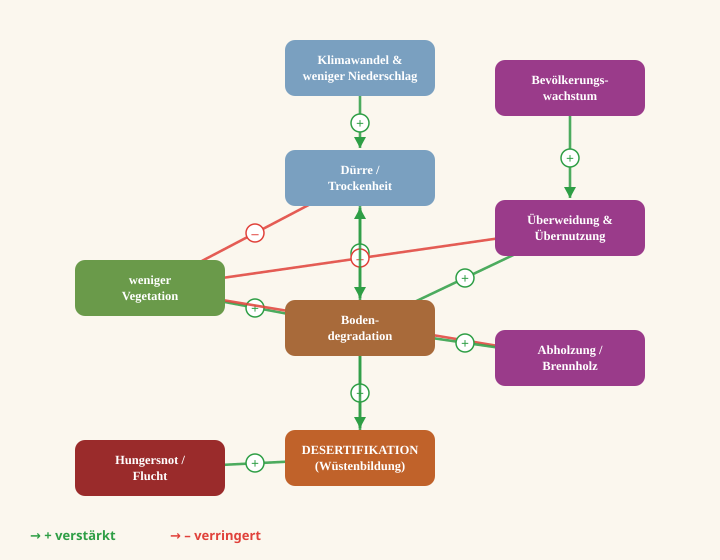
e) Hungersnot im Sudan – ist der Mensch schuld?
Im Sudan herrscht seit 2023 eine der schwersten Hungersnöte weltweit (Millionen Menschen auf der Flucht, Hungersnot
z. B. im Lager Zamzam/Darfur). Ursache ist nicht nur die Natur: Zwar machen Dürre und Desertifikation die Lage
schwierig, doch ausgelöst wird die Katastrophe vor allem durch den Bürgerkrieg zwischen Armee und der Miliz RSF.
Felder können nicht bestellt werden, Hilfslieferungen werden blockiert, Märkte brechen zusammen.
Mein Fazit: Die Hungersnot ist überwiegend menschengemacht – Krieg und Politik
verwandeln eine schwierige Naturlage in eine humanitäre Katastrophe.
Quest 7
Influencer /-in · „Auswandern nach Dubai“
Originalaufgabe Erstelle ein Reel/Infopost über die Golfstaaten.
a) Entwicklung 1950→heute (Bevölkerung, BIP, Erdöl). b) Zahlen anschaulich darstellen.
c) Entwicklung Dubais per Karte/Bilder. d) Zukunftsszenario: Dubai in 100 Jahren.
SLIDE 1 · Vom Wüstendorf zur Megacity
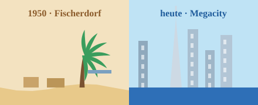
1950 war Dubai ein Fischer- & Perlentaucherdorf mit ~20.000 Menschen.
Mit dem Erdöl (ab 1966) und später Handel, Tourismus & Finanzen explodierte das Wachstum.
SLIDE 2 · Bevölkerung Dubais
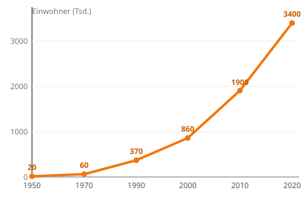
Von 20.000 (1950) auf über 3,4 Mio. (2020). Über 85 % sind heute
Zugewanderte (v. a. aus Südasien) – Einheimische sind in der Minderheit.
SLIDE 3 · Erdöl wird unwichtiger
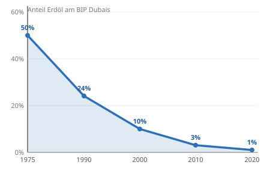
Der Anteil des Erdöls am BIP Dubais sank von ~50 % auf unter 1 %.
Dubai lebt heute von Handel, Tourismus, Logistik & Finanzen – kluge Diversifizierung!
SLIDE 4 · Boom der Golfstaaten
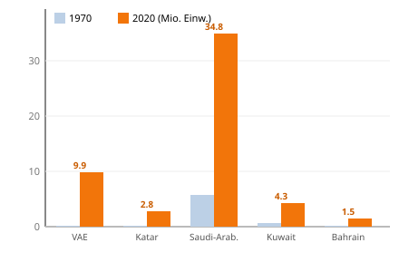
Überall am Golf wuchs die Bevölkerung rasant – getrieben durch Gastarbeiter.
Beispiel VAE: von 0,2 Mio. (1970) auf rund 10 Mio. (2020).
d) Zukunftsszenario – Dubai in 100 Jahren (2125): Das Erdöl ist längst erschöpft, doch Dubai hat sich rechtzeitig
umgestellt: Es lebt von Solarenergie (riesige Wüsten-Solarparks), grünem Wasserstoff, Tourismus, KI &
Finanzen. Größte Herausforderungen: extreme Hitze (teils >50 °C), Wasserknappheit (teure
Meerwasserentsalzung) und der Meeresspiegelanstieg, der künstliche Inseln bedroht. Mein Tipp als „Influencer“:
Dubai bleibt spannend – aber die Zukunft entscheidet sich an Nachhaltigkeit, nicht mehr am Öl.
Quest 8
Investigativjournalist /-in
Originalaufgabe a) Analysiere die Bevölkerungspyramide Katars (2016).
b) Entwirf ein Interview mit einem Gastarbeiter der WM 2022 (Herkunft, Push/Pull, Bedingungen).
c) Erkläre „Brain Gain“, „Brain Drain“, „Remittances“. d) Stelle die Migrationsarten (M5) dar & ordne ein.
a) Bevölkerungspyramide Katar 2016
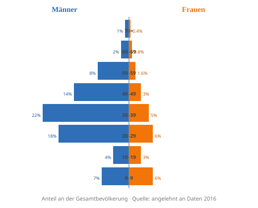
Analyse
Die Pyramide ist extrem unnatürlich: ein riesiger Block junger Männer
(20–39 Jahre) dominiert, Frauen und Kinder sind kaum vertreten. So eine Form entsteht nicht durch Geburten,
sondern durch Arbeitsmigration: Katar holt sehr viele junge männliche Gastarbeiter ins Land
(Bau, WM-Stadien). Sie kommen allein, ohne Familie. Folge: Auf 1 Frau kommen rund 3 Männer; nur ca.
10 % der Bevölkerung sind katarische Staatsbürger.
c) Fachbegriffe
- Brain Drain: Abwanderung gut Ausgebildeter aus einem (Herkunfts-)Land → Verlust.
- Brain Gain: Zuwanderung von Fachkräften in ein Land → Gewinn an Wissen.
- Remittances (Remissen/Rücküberweisungen): Geld, das Migranten in die Heimat schicken – wichtige Einnahmequelle armer Länder.
b) Interview: „Ein Stadion, eine Geschichte“ – mit Bauarbeiter Bibek (28, Nepal)
Reporter: Bibek, woher kommst du und wie bist du nach Katar gekommen?
Bibek: Aus einem Dorf in Nepal. Viele von uns kommen auch aus Indien, Bangladesch oder den Philippinen.
Ein Vermittler hat mir den Job auf der WM-Baustelle besorgt – dafür musste ich Schulden machen.
Reporter: Warum hast du deine Heimat verlassen?
Bibek: Zuhause gab es kaum Arbeit und nur wenig Lohn (Push-Faktoren: Armut, Arbeitslosigkeit).
In Katar locken ein höheres Gehalt und die Hoffnung, meine Familie zu unterstützen (Pull-Faktoren: Jobs, höherer Lohn).
Reporter: Wie waren die Bedingungen?
Bibek: Sehr hart: Arbeit bei über 45 °C, lange Schichten, beengte Sammelunterkünfte und das
Kafala-System, das uns stark vom Arbeitgeber abhängig machte. Mein Lohn schicke ich fast komplett nach Hause
(→ Remittances).
d) Migrationsarten (M5) & Einordnung
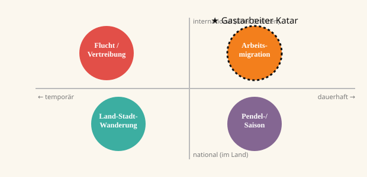
Man unterscheidet u. a. nach Dauer (temporär ↔ dauerhaft) und
Grenze (national ↔ international). Der Gastarbeiter Bibek ist eine internationale,
temporäre Arbeitsmigration (★) – freiwillig, wirtschaftlich motiviert und meist auf Zeit.
★ Selbstreflexion
Was ich auf dieser Expedition gelernt habe
Diese Aufgabe hat mir am besten gefallen:
Quest 3 (der Marokko-Flyer) und Quest 7 (der
Influencer-Infopost). Hier konnte ich kreativ gestalten und gleichzeitig viel über ein Land lernen. Es hat Spaß
gemacht, trockene Zahlen in schöne Grafiken zu verwandeln.
Diese Aufgabe ist mir schwergefallen:
Quest 5 (das Konflikt-Schaubild). Die vielen
Parteien und ihre Bündnisse neutral und trotzdem einfach darzustellen war richtig knifflig – ich musste oft
umstrukturieren, damit es übersichtlich bleibt.
Mein Arbeitstempo war …
zu langsam · ✔ genau richtig · zu schnell
Mit dem Ergebnis bin ich …
gar nicht · nicht · mittel · schon ✔ sehr
Das Projekt war …
gar nicht · nicht · mittel · schon · ✔ sehr sinnvoll
Wünsche für ein ähnliches Projekt: Ich würde mir wünschen, dass wir eine Aufgabe zusätzlich als Gruppe machen
(z. B. eine kleine Podiumsdiskussion) und vielleicht mit einer Person aus der Region sprechen könnten. Insgesamt
fand ich das Portfolio richtig gut, weil ich endlich hinter die Klischees über den „Orient“ schauen konnte.